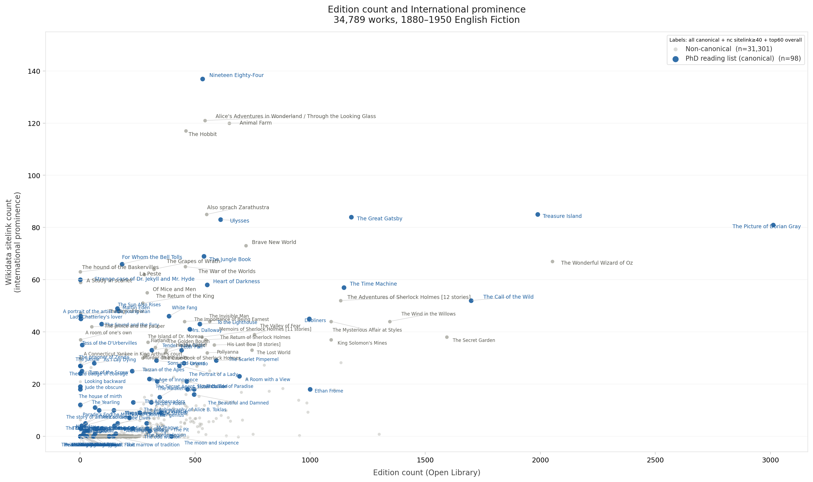

Methodological Commons としてのDH

Willard McCarty & Harold Short (2002)
"An intellectual and disciplinary map of humanities computing"
via HUMANIST / Alliance of Digital Humanities Organizations
この地図が描かれてから20年以上が経つ。
英文学研究において、このCommonsは
実際にどれだけ使われてきたのか？
4つの独立した手法で調べた。
「DHは英文学研究に根付いているか？」
"digital humanities" "distant reading" "computational" 等のキーワードでAPIを叩いた。 タイトル・抄録に含まれているかどうかしか見ておらず、ノイズが多い。数値は上限値として扱う。
Moretti・Jockers・Underwood等のDH方法論書を参考文献に含む論文をAPIで抽出した。 キーワードを使わずにDH実践をした論文を拾う目的だが、理論的言及との区別はできない。
PDFを直接入手してテキストを抽出し、脚注行を正規表現でスキャン。 分類にはClaude Haiku APIを使用。①②と異なり本文脚注を直接見るため、ノイズが少なく高精度な手法。
調査結果：「浸透」ではなく「間欠的出現」
PMLA（英文学フラッグシップ誌）
DHキーワードがヒットした論文を抄録ベースで分類すると、 DHを研究手法として使った実践的な論文は推定3本程度。 残りは制度・職能の議論、書評・言及など。
Morettiへの被引用（12本）も、遠読の実践ではなく比較文学理論家としての言及が大半。
Critical Inquiry（PDF脚注スキャン：手法③）
そのうち5本が2022年以降
2019年CI誌でDHが大きく取り上げられたのはDHへの批判論文（Da 2019）だった。
CI脚注8,940件の証拠構造
計算文学研究を恐れた小説家
▶ 計算文学研究への不安は、コンピュータよりも古い。職業研究者以外の文学者にも認知されていた問いだった。
計算文学研究の系譜
遠読（Distant Reading）とは何か
精読（Close Reading）
- テキストの内部を精密に読む
- ニュアンス・文脈・意図
- カノン数十〜数百作品
遠読（Distant Reading）
- 数千〜数万作品を計量的に分析
- パターン・傾向・歴史的変化
- 「偉大な読まれざるもの（the great unread）」
Stanford Literary Lab（2010年設立）がこの構想の制度的拠点となり、遠読を用いた実証研究が積み重ねられていく。
Stanley Fish：解釈なき計算への批判
Fishの立場：意図主義的解釈論
数量的パターンは、この枠組みなしには意味をなさない。
Fishの具体例：ミルトン『失楽園』
しかしそのパターンは実際に何を意味するのか？
ミルトンの神学・詩的伝統・意図という解釈の枠組みなしには、数字は意味にならない。 タイトル "Mind Your P's and B's" はこの批判を一言で示した皮肉。
Nan Z. Da：「CLSの方法論はそもそも誤っている」
方法論的批判
- ストップワードのジレンマ：機能語を残すと意味なし、除外すると差異消失
- LDA不安定性：データをわずかに変えるだけでトピックが大きく変わる。再現性に問題がある
- 既存研究の再検証：Piper・Long & So・Algee-Hewittらの研究で統計的妥当性に問題があると指摘
- 「膨大なデータ神話」の否定：MLが必要なほどの量ではないのに「AI必要」とするのは誇張
- 目的のミスマッチ：統計は「意味を削ぐ」が、文学研究は「意味の複雑さを読む」
CIオンラインフォーラム2019：論争の構造
Critical Inquiry 公式ブログでの多者間論争（2019年3月〜）
| 論者 | 立場 | 主な主張 |
|---|---|---|
| Algee-Hewitt | DH擁護 | EDA（探索的）とCDA（確認的）を混同している |
| Underwood | DH擁護 | トピックモデルの確率的性質は欠点でなく前提 |
| Long & So | DH擁護 | Daの批判は文脈を無視したオリエンタリズムに陥っている |
| Klein | フェミニスト批判 | データ構築の不可視の労働（女性・有色人種が担う） |
| Fish | Da支持 | 意図なきデータマイニングは無責任 |
| Bode | CLS懐疑 | DaのCLS定義が狭すぎる。キュレーションを排除 |
Walsh（2023）：Computational Reception Studies
従来のCLS
- 文学テキストそのものを計算分析
- コーパス → パターン・傾向の発見
- 文体・語彙・トピックモデルによるジャンル分類
- 時系列での言語・スタイルの変化を追う
- 例：Moretti（遠読）・Jockers（マクロ分析）・Underwood（文学史の長期変化）
→ 「作品の内側」にある構造・パターンを探る
Reception Studies
- Goodreadsのレビュー・評価データ（「古典」概念とAmazonの絡み合い）
- Social Mediaでの引用パターン：James Baldwinの言葉が Black Lives Matter（BLM）運動——2013年創設、2020年George Floyd事件を機に世界規模で拡大——の文脈でどう再流通したか
- 公共図書館・出版・プラットフォームデータ
→ プラットフォーム・経済・権力との絡み合いを可視化する
スピヴァク：Death of a Discipline（2003）
元来は比較文学への問い。differences 25.1（2014）特集「In the Shadows of the Digital Humanities」でDH批判の参照枠として読み直された。
- コーパスの偏り：遠読は英語圏・欧米中心のコーパスを「文学史」として提示しがちだ
- デジタル化の政治性：何がデジタル化され、何がされないか。それ自体が権力の配置を反映する
- DHの言語政治：「DHは遠読を優先することで文学とその言語への精密な関与を格下げにした」
- 文学の複雑さの擁護：ニュアンス・他者の言語への注意こそが人文学の本来の使命である
データの政治性：偏りの三つの構造
① コーパスの偏り
HathiTrust・Project Gutenbergは英語・欧米テキスト中心。非英語圏・植民地文学は分析の「外側」に置かれる。遠読が描く「文学史」は誰の文学史か？② ジェンダーのバイナリ化
Mandell（2019）：「量的文化分析においてジェンダーのカテゴリが生物学化・二項化・本質化されている」——Weidman & PastorのOrlando研究はこの問題を自覚的に反転させた。③ 労働の不可視化
Klein（CIフォーラム2019）：データ構築・キュレーションの「見えない労働」を女性・有色人種が担う構造。Colored Conventions Projectのような実践が評価されなければならない。Posner & Klein "Data as Media"（Feminist Media Histories 3, no.3, 2017）—— データを「知識の一次カテゴリ」ではなく「自らの資料に対する方向性」として捉え直す。
Mandell, "Gender and Cultural Analytics," Debates in the Digital Humanities 2019.
三軸の交差と乖離
三指標の交差と乖離（概念図）
問題設定：データベースの連携不足
対象
連携させたいDB
問題：共通スキーマがない
- 識別子の多義性：Treasure Island → OCLC番号が281件。版・翻訳ごとに別IDが発行される
- エンティティ混同：著者名表記ゆれ 7,553件 / 合本・シリーズ 648件
- 内部重複：Ivanhoe → 15件のwork_keyに分裂
- 収録構造の限界：著作権制約・フィルタによる構造的不可能
解法：4段階LLMエージェントパイプライン
取得
→ Wikidata API
著作リスト
著作一覧
整合性判定
文脈で照合
直接検索
（Step3失敗時）
ベースライン（0.516）
版数と国際的知名度の分布

版数 × sitelink 数（1880–1950 英語フィクション 34,789件）
発見：PhD正典と流通正典のずれ
発見① ジャンル分布の乖離
| ジャンル | PhD課題図書* | 版数上位200件 |
|---|---|---|
| モダニズム | 5件 | — |
| 自然主義 | 4件 | — |
| ファンタジー | — | 33件 |
| 児童文学 | — | 25件 |
| 探偵小説 | — | 13件 |
PhD課題図書 18 ／ 版数上位200件 9
* McGrath, Higgins & Hintze (2018, Journal of Cultural Analytics) の主要大学英文学博士課程課題図書リスト142件から104件を照合・確定した比較基準。
発見② 緊張の領域：高知名度・高流通 → PhD教育外
▶ 何が「正典」かは、どの経路で見るかに依存する。
まとめ：問いとして残るもの
計算論的手法は「新しいことを教えてくれる」のか、「すでに知っていることの再確認」か？（Da vs DHer）
PhD教育・文化流通・読者受容——同じ「正典」でも経路によって顔が違う（Alice, Animal Farm, Hobbit）。これを可視化するためにこそDB横断照合が必要だった。
何がデジタル化され、誰の言語で、誰のテキストが分析されるか——権力の非対称性を再生産しないために。（スピヴァク・Klein）
Weidman & Pastorが示したように、バイナリなフレームが問題含みでも「誤り」が新しい読みを開くことはあるか？
Walsh型の受容研究・Goodreads・TwitterのデータはプラットフォームのAPIと利用規約に縛られている——「受容」を可視化するデータ自体が資本の産物である、という循環をどう解くか？